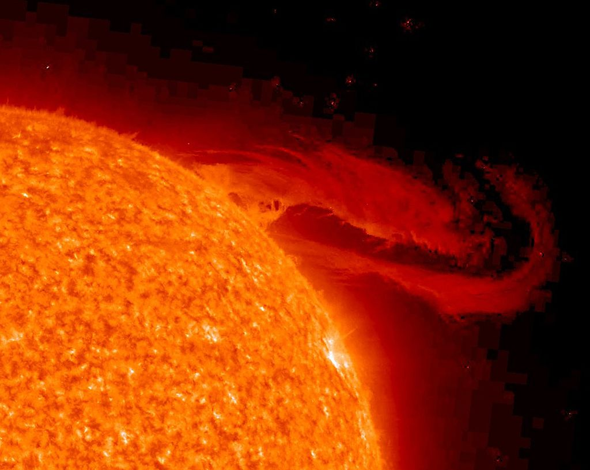
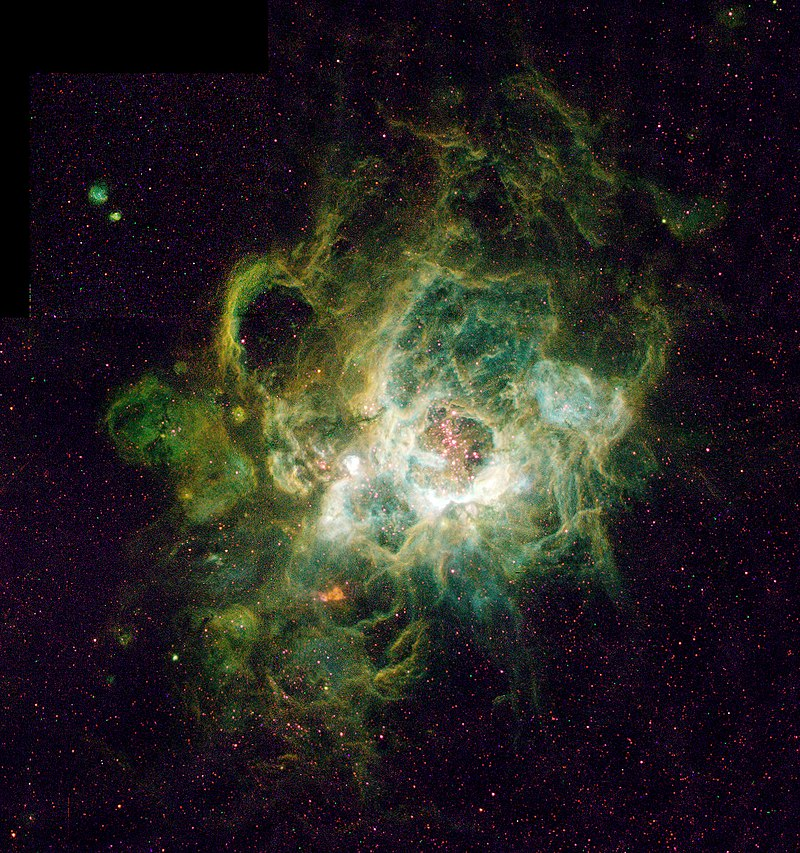

28 Σεπτεμβρίου 2023
Μακριά από τα φώτα της πόλης, κάτω από έναν νυκτερινό έναστρο ουρανό, όλοι έχουμε παρατηρήσει το φως των αστεριών στο απέραντο Σύμπαν. Θα ήθελα σε αυτό το μικρό άρθρο να σας παρουσιάσω την σχέση που έχουν όλα αυτά τα αστεράκια με το δικό μας άστρο, τον Ήλιο, την μορφολογία του καθώς και τον τρόπο με τον οποίο γεννήθηκε μέσα στα Νεφελώματα με την βοήθεια της βαρύτητας.
Το Σύμπαν είναι ένας χώρος μέσα στον οποίο υπάρχουν όλα αυτά τα ουράνια σώματα που παρατηρούμε με τα μάτια μας ή τα τηλεσκόπιά μας, όπως οι πλανήτες, τα αστέρια, τα σμήνη αστεριών, οι γαλαξίες και αλλά πολλά αντικείμενα με εξωτικά ονόματα, όπως μελανές οπές, υπερκαινοφανείς αστέρες, αστέρες νετρονίων κ.α.
Αλλά και πράγματα που δεν μπορούμε να δούμε, όπως είναι η ενέργεια, η σκοτεινή ύλη, και ουράνια σώματα που δεν βρίσκονται στο ορατό τμήμα του σύμπαντος.

Στην εικόνα βλέπετε μία έκρηξη στην επιφάνεια του Ηλίου. Η θερμοκρασία της επιφάνειας μπορεί να φτάσει στους 5780οΚ.
Το πώς μοιάζει το σύμπαν είναι μάλλον ακόμα ένα ερώτημα που δεν έχει απαντηθεί. Μπορεί να είναι παρόμοιο με ένα επίπεδο, όπως δηλαδή το δάπεδο του δωματίου σας. Έτσι όπως είναι τοποθετημένα τα έπιπλα του δωματίου σας πάνω του, με παρόμοιο τρόπο είναι τοποθετημένα και όλα τα ουράνια αντικείμενα μέσα στο Σύμπαν. Υπάρχει ακόμα, μία επικρατέστερη άποψη που αναφέρει ότι το σύμπαν μπορεί να είναι σαν ένα σφαιρικό μπαλόνι που φουσκώνει καθώς περνάει ο χρόνος και πάνω στην επιφάνειά του είναι τοποθετημένα όλα τα ουράνια αντικείμενα, όπως ο Ήλιος μας και η Γη μας.
Σίγουρα θα έχετε ακούσει ότι το Σύμπαν διαστέλλεται. Για να το κατανοήσετε αυτό, σας προτρέπω να πάρετε ένα μπαλόνι και αφού πάνω του ζωγραφίσετε έναν Ήλιο και δίπλα μία Γη, να αρχίσετε να το φουσκώνετε. Θα παρατηρήσετε τότε ότι αυτά τα δύο σχέδια θα αρχίσουν να απομακρύνονται το ένα από το άλλο και αυτή ακριβώς είναι η έννοια της διαστολής του Σύμπαντος.
Στην αρχή του χρόνου, αυτό το μπαλόνι, δηλαδή το Σύμπαν, ήταν ξεφούσκωτο και μάλιστα πάρα πολύ μικρό, τόσο όσο ένα σημειακό αντικείμενο. Τότε όλα αυτά τα ουράνια σώματα-ύλη που βρίσκονται πάνω του θα είναι όλα σε στενή επαφή, κοντά το ένα με το άλλο, αφού η επιφάνεια αυτού του μπαλονιού ήταν πολύ μικρή και έπρεπε να χωρέσουν όλα σε ένα τόσο μικρό χώρο.
Αυτή την κατάσταση θα μπορούσαμε να την χαρακτηρίσουμε ως Αρχή του Σύμπαντος. Μετά το σύμπαν άρχισε να διαστέλλεται και μάλιστα πολύ γρήγορα στα πρώτα στάδια (Θεωρία της Μεγάλης Έκρηξης - Bing Bang), η ύλη άρχισε να απομακρύνεται μέχρι που φτάσαμε στην σημερινή μορφή του και είναι έτσι όπως το βλέπετε μία έναστρη νύχτα.
Η Βαρύτητα είναι μία ιδιότητα του Σύμπαντος που όταν δύο αντικείμενα βρίσκονται το ένα δίπλα στο άλλο, έχουν την τάση να πλησιάζουν μεταξύ τους και να ενώνονται, όπως το παρακάτω παράδειγμα:
Πάρετε ένα μήλο και αφήστε το να πέσει από τα χέρια σας από κάποιο ύψος τότε προφανώς λόγω βαρύτητας το μήλο και η γη θα πλησιάσουν μεταξύ τους και θα κολλήσουν το ένα πάνω στο άλλο όπως ακριβώς κολλάνε και οι μαγνήτες.
Τα Νεφελώματα θα μπορούσαμε να τα παρομοιάσουμε με ένα μεγάλο σύννεφο σκόνης και μάλιστα τα περισσότερα από τα σωματίδια αυτής της σκόνης να είναι υδρογόνο. Αυτά τα σωματίδια μέσα στο νεφέλωμα, έλκονται λόγω της βαρύτητας και αρχίζουν και κολλάνε μεταξύ τους.
Αυτή η διαδικασία μπορεί να συνεχιστεί για πολλά εκατομμύρια χρόνια μέχρι να σχηματιστεί μία τεράστια σφαίρα που είναι το άστρο. Για τον σχηματισμό του Ήλιου μας χρειάστηκαν 30 εκατομμύρια χρόνια.
Στο τελικό και πιο εντυπωσιακό στάδιο, το αρχικό πρωτοαστέρι έχει μεγαλώσει τόσο πολύ ώστε τα εξωτερικά στρώματα του αστεριού πιέζουν ισχυρά τις περιοχές που βρίσκονται στον πυρήνα του άστρου. Αυτό έχει σαν συνέπεια τα μόρια του υδρογόνου που βρίσκονται στον πυρήνα να πλησιάζουν πολύ κοντά, με αποτέλεσμα να ενώνονται μεταξύ τους και να παράγουν ήλιο, θερμότητα και ακτινοβολία κατά την διαδικασία των θερμοπυρηνικών αντιδράσεων.
Η ακτινοβολία αυτή δεν είναι τίποτα άλλο από το φως που έρχεται από τον ήλιο μέχρι εμάς, μας φωτίζει και παρέχει όλη την ενέργεια για σχεδόν όλες τις διαδικασίες που συντελούνται πάνω στην Γη.
Άστρα σαν το Ήλιο μας υπάρχουν πάρα πολλά στο Σύμπαν και όταν κοιτάζουμε τον έναστρο ουρανό, αυτές οι μικρές λάμψεις φωτός είναι αστέρια που έχουν γεννηθεί με παρόμοιο τρόπο σε διάφορα μέρη του σύμπαντος, μέσα στα Νεφελώματα.
Υπάρχουν άστρα διαφόρων μεγεθών. Ο Ήλιος μας θα λέγαμε ότι είναι ένα σχετικά μικρό άστρο σε μέγεθος. Ενδιαφέρον είναι ότι για να μπορέσει να ενεργοποιηθεί ο μηχανισμός της θερμοπυρηνικής αντίδρασης και να εκπέμπει φως ένα άστρο, θα πρέπει αυτό να είναι μεγαλύτερο από μία κρίσιμη μάζα, π.χ. ο πλανήτης Δίας αν ήταν περίπου 100 φορές μεγαλύτερος, τότε στο εσωτερικό του θα είχε αρχίσει η θερμοπυρηνική αντίδραση και έτσι θα έλαμπε και αυτός σαν το ήλιο μας. Θα είχαμε δηλαδή δύο ήλιους στον ουρανό μας.

Στην εικόνα βλέπετε ένα από τα πολλά νεφελώματα που υπάρχουν στο Σύμπαν και είναι τα λίκνα των αστεριών.
Ένα άλλο ενδιαφέρον χαρακτηριστικό των αστεριών είναι το χρώμα του φωτός που εκπέμπουν ανάλογα με την θερμοκρασία που έχουν. Τα πιο ψυχρά είναι κόκκινου χρώματος και καθώς αυξάνεται η θερμοκρασία εκπέμπουν πορτοκαλί, κίτρινο, πράσινο, γαλάζιο και ιώδες χρώμα αντίστοιχα. Επομένως την επόμενη φορά που θα κοιτάξετε τον νυχτερινό ουρανό προσπαθήστε να αναλύσετε τα χρώματα των αστεριών!
Μετά από πολλά χρόνια, το υδρογόνο στο εσωτερικό του αστέρα θα μετατραπεί σε ήλιο. Έτσι δεν θα υπάρχει καύσιμο που να συντηρεί την φωτιά της θερμοπυρηνικής αντίδρασης και το άστρο θα σβήσει.
Μην φοβάστε όμως για το μέλλον του ανθρώπου πάνω στην Γη, γιατί αυτό θα γίνει σε πολλά δισεκατομμύρια χρόνια. Γενικά η ηλικία των αστεριών κυμαίνεται από 1 έως και 10 δισεκατομμύρια χρόνια (η ηλικία του ορατού σύμπαντος είναι περίπου 13,7 δισεκατομμύρια χρόνια). Η Ήλιος αναμένεται να ζήσει για συνολικά 10 δισεκατομμύρια χρόνια ενώ η σημερινή του ηλικία είναι 5 δισεκατομμύρια χρόνια.
Όταν τα αστέρια σβήνουν, συνεχίζουν να υφίστανται ως ουράνια σώματα με πολύ ενδιαφέροντα χαρακτηριστικά, όπως αυτά των Άσπρων ή Μαύρων Νάνων, Αστέρια Νετρονίων και Μελανές Οπές. Συγκεκριμένα ο Ήλιος μας θα καταλήξει σε μία κατάσταση που χαρακτηρίζεται ως Άσπρος και εν συνεχεία Μαύρος Νάνος.